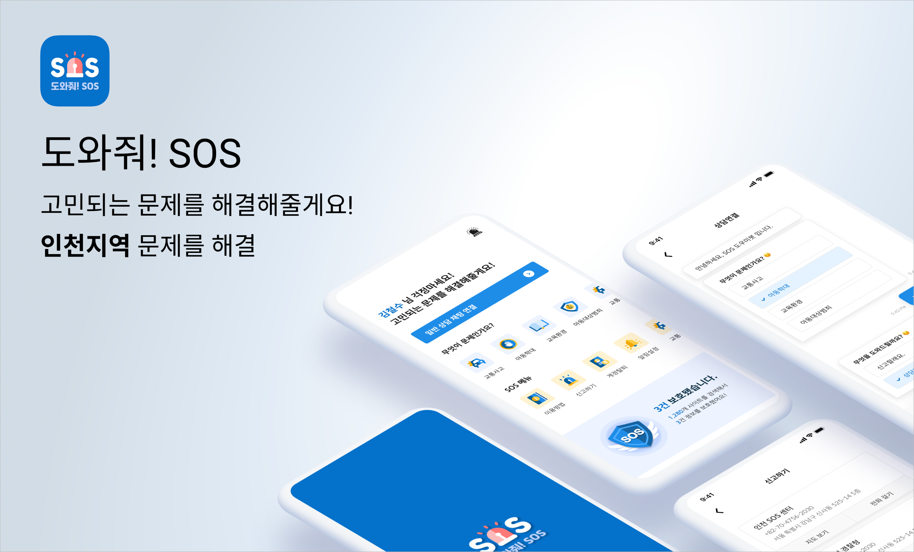
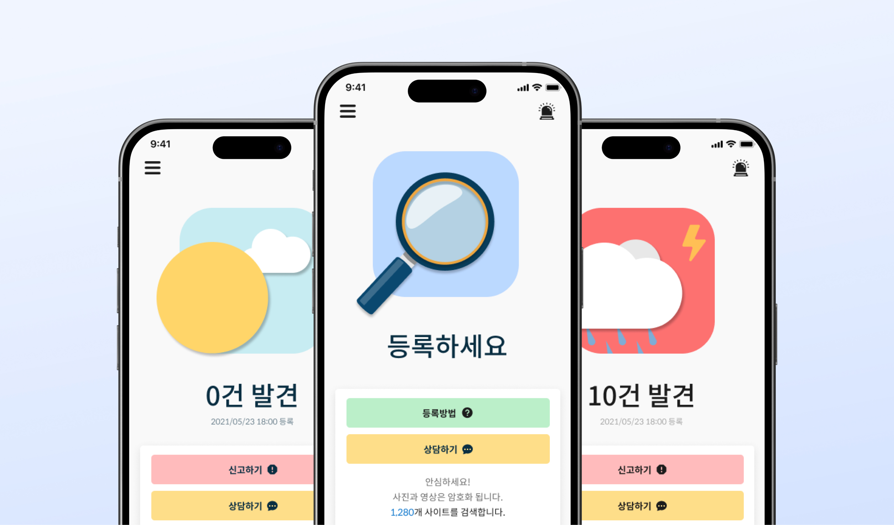

<!DOCTYPE html>
<html>
    <head>
        <meta charset="utf-8" />
        <meta name="viewport" content="width=device-width, initial-scale=1">
        <title>Incheon SOS</title>
        <link rel="stylesheet" type="text/css" href="../css/styles.css">
        <link rel="preconnect" href="https://fonts.googleapis.com">
        <link rel="preconnect" href="https://fonts.googleapis.com">
        <link rel="preconnect" href="https://fonts.gstatic.com" crossorigin>
        <link href="https://fonts.googleapis.com/css2?family=Courier+Prime:ital,wght@0,400;0,700;1,400;1,700&family=Montserrat:ital,wght@0,100..900;1,100..900&display=swap" rel="stylesheet">
        <link rel="icon" type="image/png" href="../dy_favicon.png">
    </head>
</html>
<body>
    <div class="mode-toggle">
        <button id="darkModeToggle">
            
        </button>
    </div>
    <header>
        <div class="language-selector">
            <a href="../sub_sos_kr.html">KR</a>
            <div class="lang-divider"></div>
            <a href="#" class="active">EN</a>
            <div class="lang-divider"></div>
            <a href="../cn/sub_sos_cn.html">CN</a>
        </div>
    </header>
    <div class="sub-contents">
        <a href="index_en.html">&lt; Back to Home</a>
        
        <div class="sub-contents-text">
            <div class="sub-text-title">Overview</div>
            <div class="sub-text-p">
                APEXESC has developed a solution app aimed at addressing online sexual crimes in the Incheon area. The app allows users to upload photos or videos, which are then analyzed for facial recognition to find similar images. Users can report and consult with the police directly through the app. Additionally, users can view a map of responsible centers for reporting, and contact them via phone or chat.
                <br/><br/>
                I contributed 50% to the project, working alongside another designer. My involvement included overall design tasks such as logo design, icon graphics, and layout. The overall design was inspired by weather patterns to create a user-friendly interface that is easy to use regardless of age.
            </div>
        </div>
                
        
        
        
        
    <footer>
        <p>&copy; 2025 Dayeong Kim. All rights reserved.</p>
    </footer>

    <script src="../js/scripts.js"></script>
</body>